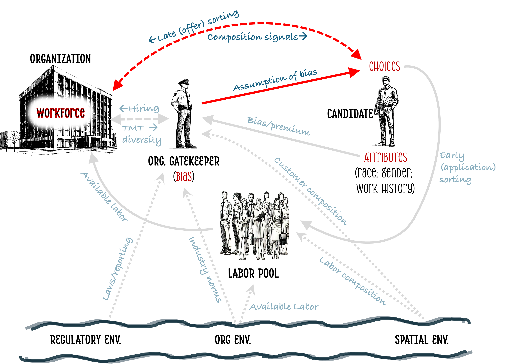

Attending to the Hierarchy: Job Seeker Responses to Diversity Signals and the Perpetuation of Labor Market Segregation
Summary
I introduces the concept of Hierarchical Demographic Configurations (HDCs) to explain how the racial composition of supervisors, peers, and subordinates shapes job seekers’ evaluations of organizations. Using a conjoint experiment and agent-based simulations, I show that 1) each tier has significantly different patterns of preference, and 2) even such modest preferences — when repeated across workers and time — can generate substantial segregation across organizations. The study highlights how job seekers’ attention to the demographic legacies of past exclusion helps sustain current segregation.